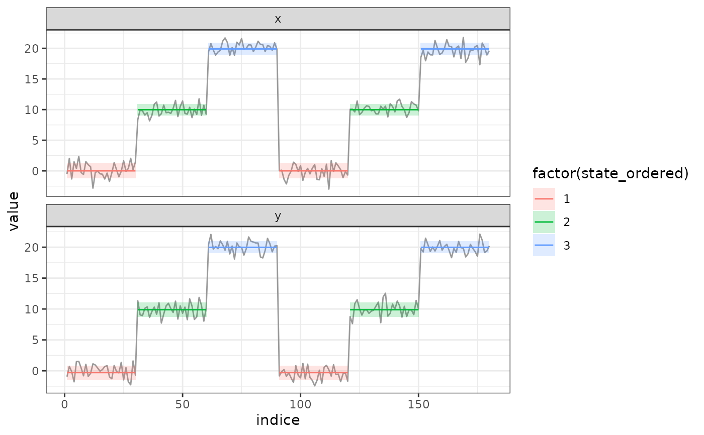
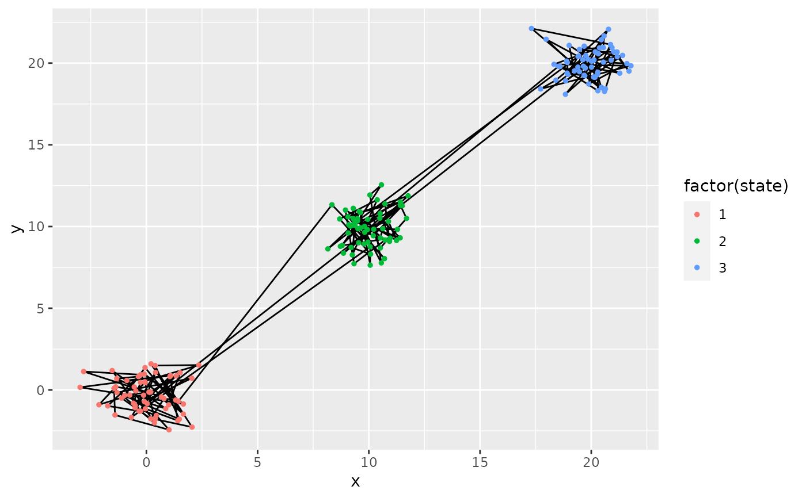
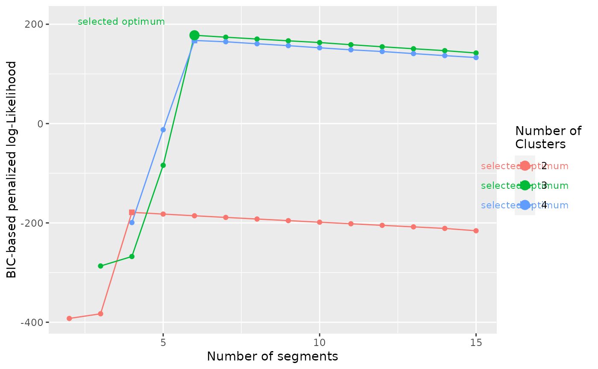

#>
#> ── Checking arguments ──────────────────────────────────────────────────────────
#> ✓ Segmentation with seg.var = c("x", "y")
#> ✓ Using lmin = 10
#> ✓ Using Kmax = 15
#> ✓ Using ncluster = 2:4
#> ! Argument scale.variable missing
#> Taking default value scale.variable = TRUE for segclust().
#> ℹ Argument diag.var was not provided
#> Taking default seg.var as diagnostic variables diag.var.
#> Setting diag.var = c("x", "y")
#> ℹ Argument order.var was not provided
#> Taking default diag.var[1] as ordering variable order.var.
#> Setting order.var = "x"
#>
#> ── Preparing and checking data ─────────────────────────────────────────────────
#>
#> ── Subsampling ──
#>
#> ! Subsampling automatically activated. To disable it, provide subsample = FALSE
#> ℹ Argument subsample_over was not provided
#> Taking default value for segmentation()
#> Setting subsample_over = 10000
#> ✓ nrow(x) < subsample_over, no subsample needed
#>
#> ── Scaling and final data check ──
#>
#> ✓ Rescaling variables.
#> To desactivate, use scale.variable = FALSE
#> ✓ Data have no repetition of nearly-identical values larger than lmin
#>
#> ── Running Segmentation/Clustering algorithm ───────────────────────────────────
#> ℹ Running Segmentation/Clustering with lmin = 10, Kmax = 15 and ncluster = 2:4
#> → Calculating initial segmentation without clustering
#> ✓ Initial segmentation with no cluster calculated.
#> → Calculating initial segmentation without clustering
#>
#> → Calculating initial segmentation without clustering
#> ── Segmentation/Clustering with ncluster = 2
#> → Calculating initial segmentation without clustering
#> → Calculating initial segmentation without clustering
#> → Segmentation-Clustering for ncluster = 2 and nseg = 2/15
#> → Segmentation-Clustering for ncluster = 2 and nseg = 3/15
#> → Segmentation-Clustering for ncluster = 2 and nseg = 4/15
#> → Segmentation-Clustering for ncluster = 2 and nseg = 5/15
#> → Segmentation-Clustering for ncluster = 2 and nseg = 6/15
#> → Segmentation-Clustering for ncluster = 2 and nseg = 7/15
#> → Segmentation-Clustering for ncluster = 2 and nseg = 8/15
#> → Segmentation-Clustering for ncluster = 2 and nseg = 9/15
#> → Segmentation-Clustering for ncluster = 2 and nseg = 10/15
#> → Segmentation-Clustering for ncluster = 2 and nseg = 11/15
#> → Segmentation-Clustering for ncluster = 2 and nseg = 12/15
#> → Segmentation-Clustering for ncluster = 2 and nseg = 13/15
#> → Segmentation-Clustering for ncluster = 2 and nseg = 14/15
#> → Segmentation-Clustering for ncluster = 2 and nseg = 15/15
#> ✓ Segmentation-Clustering successful for ncluster = 2 and nseg = 2:15
#> → Segmentation-Clustering for ncluster = 2 and nseg = 15/15
#> → Smoothing likelihood for ncluster = 2. This step can be lengthy.
#> ✓ Smoothing successful for ncluster = 2
#> → Smoothing likelihood for ncluster = 2. This step can be lengthy.
#> → Calculating initial segmentation without clustering
#> ✓ Segmentation/Clustering with ncluster = 2 successfully calculated.
#> BIC selected : nseg = 4
#> → Calculating initial segmentation without clustering
#>
#> → Calculating initial segmentation without clustering
#> ── Segmentation/Clustering with ncluster = 3
#> → Calculating initial segmentation without clustering
#> → Calculating initial segmentation without clustering
#> → Segmentation-Clustering for ncluster = 3 and nseg = 3/15
#> → Segmentation-Clustering for ncluster = 3 and nseg = 4/15
#> → Segmentation-Clustering for ncluster = 3 and nseg = 5/15
#> → Segmentation-Clustering for ncluster = 3 and nseg = 6/15
#> → Segmentation-Clustering for ncluster = 3 and nseg = 7/15
#> → Segmentation-Clustering for ncluster = 3 and nseg = 8/15
#> → Segmentation-Clustering for ncluster = 3 and nseg = 9/15
#> → Segmentation-Clustering for ncluster = 3 and nseg = 10/15
#> → Segmentation-Clustering for ncluster = 3 and nseg = 11/15
#> → Segmentation-Clustering for ncluster = 3 and nseg = 12/15
#> → Segmentation-Clustering for ncluster = 3 and nseg = 13/15
#> → Segmentation-Clustering for ncluster = 3 and nseg = 14/15
#> → Segmentation-Clustering for ncluster = 3 and nseg = 15/15
#> ✓ Segmentation-Clustering successful for ncluster = 3 and nseg = 3:15
#> → Segmentation-Clustering for ncluster = 3 and nseg = 15/15
#> → Smoothing likelihood for ncluster = 3. This step can be lengthy.
#> ✓ Smoothing successful for ncluster = 3
#> → Smoothing likelihood for ncluster = 3. This step can be lengthy.
#> → Calculating initial segmentation without clustering
#> ✓ Segmentation/Clustering with ncluster = 3 successfully calculated.
#> BIC selected : nseg = 6
#> → Calculating initial segmentation without clustering
#>
#> → Calculating initial segmentation without clustering
#> ── Segmentation/Clustering with ncluster = 4
#> → Calculating initial segmentation without clustering
#> → Calculating initial segmentation without clustering
#> → Segmentation-Clustering for ncluster = 4 and nseg = 4/15
#> → Segmentation-Clustering for ncluster = 4 and nseg = 5/15
#> → Segmentation-Clustering for ncluster = 4 and nseg = 6/15
#> → Segmentation-Clustering for ncluster = 4 and nseg = 7/15
#> → Segmentation-Clustering for ncluster = 4 and nseg = 8/15
#> → Segmentation-Clustering for ncluster = 4 and nseg = 9/15
#> → Segmentation-Clustering for ncluster = 4 and nseg = 10/15
#> → Segmentation-Clustering for ncluster = 4 and nseg = 11/15
#> → Segmentation-Clustering for ncluster = 4 and nseg = 12/15
#> → Segmentation-Clustering for ncluster = 4 and nseg = 13/15
#> → Segmentation-Clustering for ncluster = 4 and nseg = 14/15
#> → Segmentation-Clustering for ncluster = 4 and nseg = 15/15
#> ✓ Segmentation-Clustering successful for ncluster = 4 and nseg = 4:15
#> → Segmentation-Clustering for ncluster = 4 and nseg = 15/15
#> → Smoothing likelihood for ncluster = 4. This step can be lengthy.
#> ✓ Smoothing successful for ncluster = 4
#> → Smoothing likelihood for ncluster = 4. This step can be lengthy.
#> → Calculating initial segmentation without clustering
#> ✓ Segmentation/Clustering with ncluster = 4 successfully calculated.
#> BIC selected : nseg = 6
#> → Calculating initial segmentation without clustering
#>
#> ── Segmentation/Clustering results ─────────────────────────────────────────────
#> ✓ Best segmentation/clustering estimated with 3 cluster and 6 segments according to BIC
#> → Number of cluster should preferentially be selected according to biological
#> knowledge. Exploring the BIC plot with plot_BIC() can also provide advice to
#> select the number of cluster.
#> → Once number of cluster is selected, the number of segment should be selected
#> according to BIC.
#> → Results of the segmentation/clustering may further be explored with plot()
#> and segmap()
#> ℹ Argument order missing.
#> Ordering cluster with variable x for segmentation/clustering. To disable, use
#> order = FALSE
#> ! Argument ncluster was not provided. Selecting values with BIC
#> ℹ BIC-selected number of class : ncluster = 3
#> BIC-selected number of segment : nseg = 6

#> ℹ Argument order missing.
#> Ordering cluster with variable x for segmentation/clustering. To disable, use
#> order = FALSE
#> ! Argument ncluster was not provided. Selecting values with BIC
#> ℹ BIC-selected number of class : ncluster = 3
#> BIC-selected number of segment : nseg = 6

